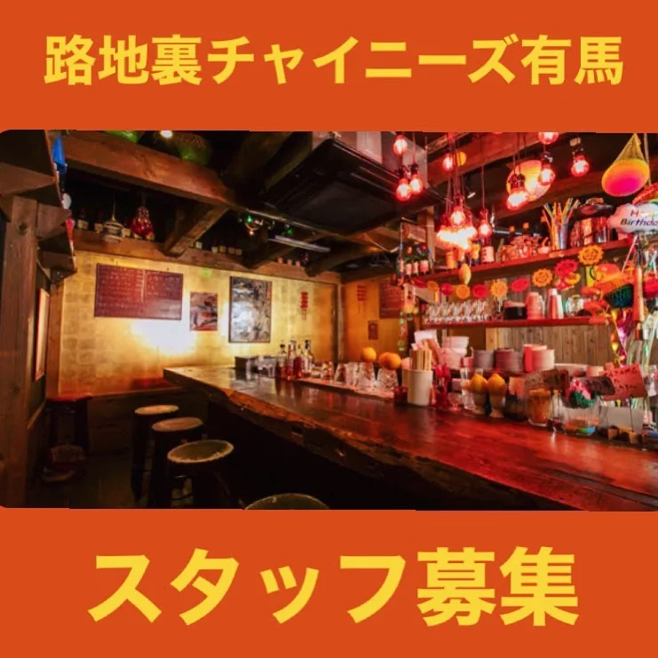

2023年10月8日
【アルバイトスタッフ募集】

【アルバイトスタッフ募集】 スタッフを一名追加して、 さらに良い店に変えていきたい！ 長期アルバイトの方を募集しております！ 短期の方は応相談！ どんな店かは、過去のインスタを見てください！！ ⚫︎ホールスタッフ ⚫︎時給1200円 （50hの研修中 1,100円） ⚫︎交通費500円まで支給 ⚫︎履歴書不要 （面接当日にエントリーシート有） ⚫︎美味しいまかない付 ⚫︎週2日〜 ⚫︎1日３h〜 ご質問や、相談などは、 DMに送ってください！！ ご応募お待ちしてまーす！！ #中華バル#中華#中華料理#福島区グルメ#路地裏#B級グルメ#中国#チャイニーズ#路地裏チャイニーズ有馬#有馬#シュウマイ#餃子#点心#麻婆豆腐 #スタッフ募集